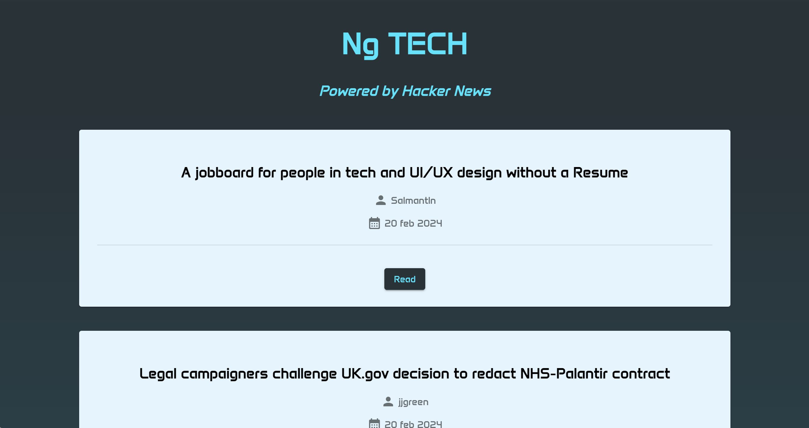
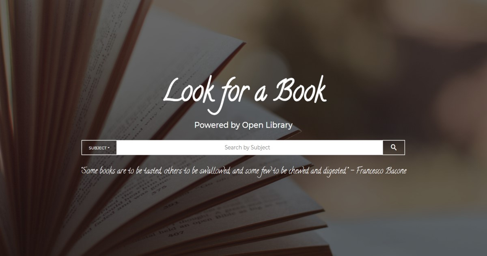
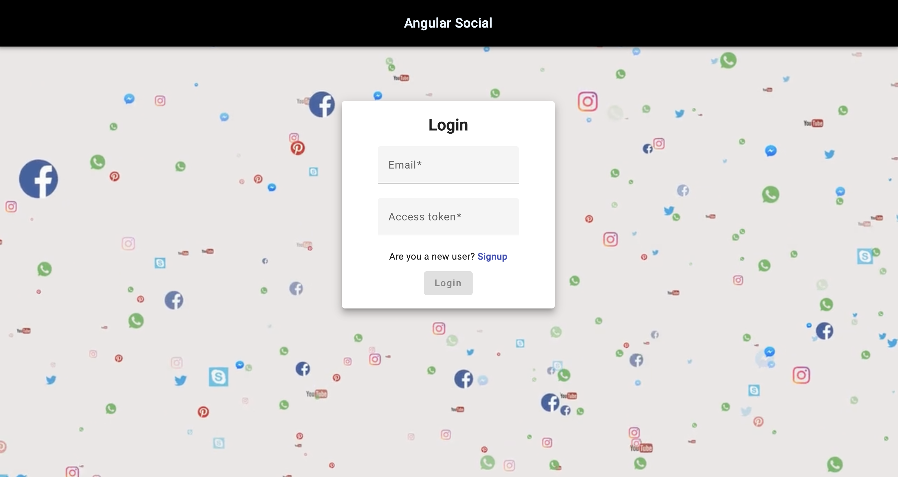
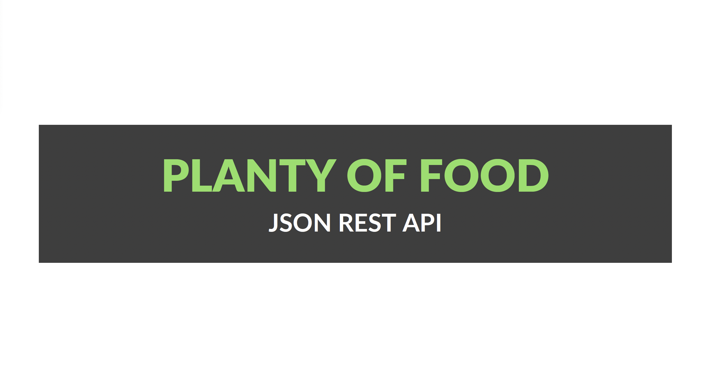

Ng TECH is a basic portal for tech news powered by Hacker News. It is realized with Angular and designed with Angular Material. More details on the Github repo.
Project requirements

Look for a Book is a book search website powered by Open Library, realized with JavaScript and designed with Material Design for Bootstrap. More details on the Github repo.
Project requirements

Angular Social is a basic simulation of a social network powered by Go REST. It is realized with Angular and designed with Angular Material. More details on the Github repo.
Project requirements

This Node.js project recreates the JSON RESTful APIs for a hypothetical platform that manages purchasing groups for the Planty of Food company. Being a Node.js project, it was created in JavaScript with the help of the Express framework, the use of a MongoDB database for data storage and the Mongoose library to facilitate interaction with it. For unit tests, Mocha, Chai and Sinon were used instead. More details on the Github repo.
Project requirements
Work in progress